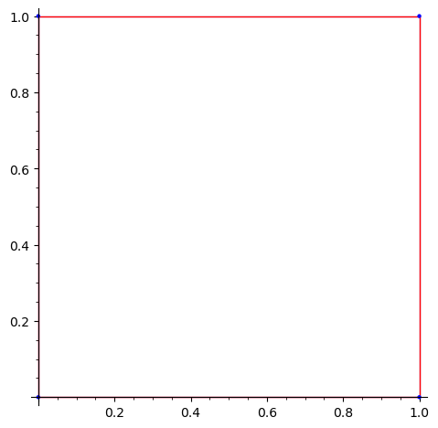

euclidean_polygons#
The category of Euclidean polygons defined in the real plane.
See flatsurf.geometry.categories for a general description of the
category framework in sage-flatsurf.
Normally, you won’t create this (or any other) category directly. The correct category of a polygon is automatically determined.
EXAMPLES:
sage: from flatsurf.geometry.categories import EuclideanPolygons
sage: C = EuclideanPolygons(QQ)
sage: from flatsurf import polygons
sage: polygons.square() in C
True
- class flatsurf.geometry.categories.euclidean_polygons.EuclideanPolygons(base, name=None)[source]#
The category of Euclidean polygons defined in the real plane over a fixed base ring.
EXAMPLES:
sage: from flatsurf.geometry.categories import EuclideanPolygons sage: EuclideanPolygons(QQ) Category of euclidean polygons over Rational Field
- class Convex(base_category)[source]#
The subcategory of convex Euclidean polygons in the real plane.
EXAMPLES:
For historic reasons, there is the shortcut
ConvexPolygonsto get the Euclidean convex polygons:sage: from flatsurf import ConvexPolygons sage: C = ConvexPolygons(QQ) sage: from flatsurf.geometry.categories import EuclideanPolygons sage: C is EuclideanPolygons(QQ).Convex().Simple() True sage: C(vertices=[(0,0), (2,0), (1,1)]) Polygon(vertices=[(0, 0), (2, 0), (1, 1)]) sage: C(edges=[(1,0), (0,1), (-1,0), (0,-1)]) Polygon(vertices=[(0, 0), (1, 0), (1, 1), (0, 1)])
This axiom can also be created over non-fields:
sage: ConvexPolygons(ZZ) Category of convex simple euclidean polygons over Integer Ring
- class ParentMethods[source]#
Provides methods available to all convex Euclidean polygons in the real plane.
If you want to add functionality to such polygons, you probably want to put it here.
- is_convex(strict=False)[source]#
Return whether this is a convex polygon.
INPUT:
strict– whether to check for strict convexity, i.e., a polygon with a π angle is not considered convex.
EXAMPLES:
sage: from flatsurf import polygons sage: S = polygons.square() sage: S.is_convex() True sage: S.is_convex(strict=True) True
- class ParentMethods[source]#
Provides methods available to all Euclidean polygons in the real plane.
If you want to add functionality to such polygons, you probably want to put it here.
- angle(e, numerical=None, assume_rational=None)[source]#
Return the angle at the beginning of the start point of the edge
e.EXAMPLES:
sage: from flatsurf.geometry.polygon import polygons sage: polygons.square().angle(0) 1/4 sage: polygons.regular_ngon(8).angle(0) 3/8 sage: from flatsurf import Polygon sage: T = Polygon(vertices=[(0,0), (3,1), (1,5)]) sage: [T.angle(i, numerical=True) for i in range(3)] # abs tol 1e-13 [0.16737532973071603, 0.22741638234956674, 0.10520828791971722] sage: sum(T.angle(i, numerical=True) for i in range(3)) # abs tol 1e-13 0.5
- angles(numerical=None, assume_rational=None)[source]#
Return the list of angles of this polygon (divided by 2 pi).
EXAMPLES:
sage: from flatsurf import Polygon sage: T = Polygon(angles=[1, 2, 3]) sage: [T.angle(i) for i in range(3)] [1/12, 1/6, 1/4] sage: T.angles() (1/12, 1/6, 1/4) sage: sum(T.angle(i) for i in range(3)) 1/2
- area()[source]#
Return the area of this polygon.
EXAMPLES:
sage: from flatsurf.geometry.polygon import polygons sage: polygons.regular_ngon(8).area() 2*a + 2 sage: _ == 2*AA(2).sqrt() + 2 True sage: AA(polygons.regular_ngon(11).area()) 9.36563990694544? sage: polygons.square().area() 1 sage: (2*polygons.square()).area() 4
- centroid()[source]#
Return the coordinates of the centroid of this polygon.
ALGORITHM:
We use the customary formula of the centroid of polygons, see https://en.wikipedia.org/wiki/Centroid#Of_a_polygon
EXAMPLES:
sage: from flatsurf.geometry.polygon import polygons sage: P = polygons.regular_ngon(4) sage: P Polygon(vertices=[(0, 0), (1, 0), (1, 1), (0, 1)]) sage: P.centroid() (1/2, 1/2) sage: P = polygons.regular_ngon(8); P Polygon(vertices=[(0, 0), (1, 0), (1/2*a + 1, 1/2*a), (1/2*a + 1, 1/2*a + 1), (1, a + 1), (0, a + 1), (-1/2*a, 1/2*a + 1), (-1/2*a, 1/2*a)]) sage: P.centroid() (1/2, 1/2*a + 1/2) sage: P = polygons.regular_ngon(11) sage: C = P.centroid() sage: P = P.translate(-C) sage: P.centroid() (0, 0)
- edge(i)[source]#
Return the vector going from vertex
ito the following vertex in counter-clockwise order.EXAMPLES:
Note that this wraps around if
iis negative or exceeds the number of vertices:sage: from flatsurf import polygons sage: s = polygons.square() sage: s.edge(-1) (0, -1) sage: s.edge(0) (1, 0) sage: s.edge(1) (0, 1) sage: s.edge(2) (-1, 0) sage: s.edge(3) (0, -1) sage: s.edge(4) (1, 0)
- edges()[source]#
Return the edges of this polygon as vectors in the plane going from one vertex to the next one.
EXAMPLES:
sage: from flatsurf import polygons sage: s = polygons.square() sage: s.edges() [(1, 0), (0, 1), (-1, 0), (0, -1)]
- erase_marked_vertices()[source]#
Return a copy of this polygon without marked vertices.
EXAMPLES:
sage: from flatsurf import Polygon sage: p = Polygon(vertices=[(0, 0), (2, 0), (4, 0), (2, 2)]) sage: p.erase_marked_vertices() Polygon(vertices=[(0, 0), (4, 0), (2, 2)])
- field()[source]#
EXAMPLES:
sage: from flatsurf import polygons sage: S = polygons.square() sage: S.field() doctest:warning ... UserWarning: field() has been deprecated and will be removed from a future version of sage-flatsurf; use base_ring() or base_ring().fraction_field() instead Rational Field
- get_point_position(point, translation=None)[source]#
Return the combinatorial classification of a point and a polygon.
INPUT:
point– a point in the plane as a SageMath vector or pair of numbers
OUTPUT:
a
geometry.polygon.PolygonPositionobjectALGORITHM:
We use a winding number algorithm see https://en.wikipedia.org/wiki/Point_in_polygon#Winding_number_algorithm
EXAMPLES:
sage: from flatsurf import polygons, Polygon sage: S = polygons.square() sage: S.get_point_position((1/2, 1/2)) point positioned in interior of polygon sage: S.get_point_position((1, 0)) point positioned on vertex 1 of polygon sage: S.get_point_position((1, 1/2)) point positioned on interior of edge 1 of polygon sage: S.get_point_position((1, 3/2)) point positioned outside polygon sage: p = Polygon(edges=[(1, 0), (1, 0), (1, 0), (0, 1), (-3, 0), (0, -1)]) sage: p.get_point_position([10, 0]) point positioned outside polygon sage: p.get_point_position([1/2, 0]) point positioned on interior of edge 0 of polygon sage: p.get_point_position([3/2, 0]) point positioned on interior of edge 1 of polygon sage: p.get_point_position([2,0]) point positioned on vertex 2 of polygon sage: p.get_point_position([5/2, 0]) point positioned on interior of edge 2 of polygon sage: p.get_point_position([5/2, 1/4]) point positioned in interior of polygon
- is_convex(strict=False)[source]#
Return whether this is a convex polygon.
INPUT:
strict– whether to check for strict convexity, i.e., a polygon with a π angle is not considered convex.
EXAMPLES:
sage: from flatsurf import polygons sage: S = polygons.square() sage: S.is_convex() True sage: S.is_convex(strict=True) True
- is_degenerate()[source]#
Return whether this polygon is considered degenerate.
This implements
flatsurf.geometry.categories.polygons.Polygons.ParentMethods.is_degenerate().EXAMPLES:
Polygons with zero area are considered degenerate:
sage: from flatsurf import Polygon sage: p = Polygon(vertices=[(0, 0), (2, 0), (1, 0)], check=False) sage: p.is_degenerate() True
Polygons with marked vertices are considered degenerate:
sage: from flatsurf import Polygon sage: p = Polygon(vertices=[(0, 0), (2, 0), (4, 0), (2, 2)]) sage: p.is_degenerate() True
- is_equiangular()[source]#
Return whether all sides of this polygon meet at the same angle.
EXAMPLES:
sage: from flatsurf import Polygon sage: p = Polygon(vertices=[(0, 0), (2, 0), (2, 2), (0, 2)]) sage: p.is_equiangular() True
- is_equilateral()[source]#
Return whether all sides of this polygon have the same length.
EXAMPLES:
sage: from flatsurf import Polygon sage: p = Polygon(vertices=[(0, 0), (2, 0), (2, 2), (0, 2)]) sage: p.is_equilateral() True
- is_rational()[source]#
Return whether this is a rational polygon, i.e., all its
angles()are rational multiples of π.EXAMPLES:
sage: from flatsurf import Polygon sage: p = Polygon(vertices = [(1, 0), (0, 1), (-1, -1)]) sage: p.is_rational() False
Note that determining rationality is somewhat costly. Once established, this refines the category of the triangle:
sage: p = Polygon(vertices = [(0, 0), (1, 0), (0, 1)]) sage: p.category() Category of convex simple euclidean polygons over Rational Field sage: p.is_rational() True sage: p.category() Category of rational convex simple euclidean polygons over Rational Field
- is_simple()[source]#
Return whether this is a simple polygon, i.e., without self-intersection.
EXAMPLES:
sage: from flatsurf import polygons sage: s = polygons.square() sage: s.is_simple() True
- join(other, edge, other_edge)[source]#
Return the polygon obtained by gluing this polygon and
otheralong theiredgeandother_edge, respectively.The polygons have to be such that the glued edges are identical but with opposite orientation.
INPUT:
other– a polygon over the same base ring as this polygonedge– an integer; the index of the edge of this polygon along which to glueother_edge– an integer; the index of the edge ofotheralong which to glue
EXAMPLES:
sage: from flatsurf import Polygon sage: P = Polygon(vertices=[(0, 0), (1, 0), (0, 1)]) sage: Q = Polygon(vertices=[(1, 0), (1, 1), (0, 1)]) sage: P.join(Q, 1, 2) Polygon(vertices=[(0, 0), (1, 0), (1, 1), (0, 1)]) sage: P.join(P, 1, 1) Traceback (most recent call last): ... ValueError: glued edges must be identical with opposite orientation sage: Q = Polygon(vertices=[(0, 0), (0, 1), (-1, 1)]) sage: P.join(Q, 1, 2) Traceback (most recent call last): ... ValueError: glued edges must be identical with opposite orientation sage: P.join(Q, 2, 0) Polygon(vertices=[(0, 0), (1, 0), (0, 1), (-1, 1)])
Polygons cannot be joined if that would lead to a self-intersecting polygon:
sage: P = Polygon(vertices=[(0, 0), (2, 0), (2, 2), (0, 2), (1, 1)]) sage: Q = Polygon(vertices=[(0, 0), (1, 1), (2, 2), (0, 2)]) sage: P.join(Q, 4, 0) Traceback (most recent call last): ... NotImplementedError: polygon self-intersects
- module()[source]#
Return the free module of rank 2 in which this polygon embeds.
EXAMPLES:
sage: from flatsurf import polygons sage: S = polygons.square() sage: S.module() doctest:warning ... UserWarning: module() has been deprecated and will be removed in a future version of sage-flatsurf; use base_ring()**2 instead Vector space of dimension 2 over Rational Field
- plot(translation=None, polygon_options={}, edge_options={}, vertex_options={})[source]#
Return a plot of this polygon with the origin at
translation.EXAMPLES:
sage: from flatsurf import polygons sage: S = polygons.square() sage: S.plot() ...Graphics object consisting of 3 graphics primitives
We can specify an explicit
zorderto render edges and vertices on top of the axes which are rendered at z-order 3:sage: S.plot(edge_options={'zorder': 3}, vertex_options={'zorder': 3}) ...Graphics object consisting of 3 graphics primitives
We can control the colors, e.g., we can render transparent polygons, with red edges and blue vertices:
sage: S.plot(polygon_options={'fill': None}, edge_options={'color': 'red'}, vertex_options={'color': 'blue'}) ...Graphics object consisting of 3 graphics primitives

- slopes(relative=False)[source]#
Return the slopes of this polygon as vectors in the plane.
INPUT:
relative– a boolean (default:False); whether to return the slopes not as absolute vectors parallel to the edges but relative to the previous edge, i.e., after turning the previous edge to be parallel to the x axis.
EXAMPLES:
sage: from flatsurf import polygons sage: s = polygons.square() sage: s.slopes() [(1, 0), (0, 1), (-1, 0), (0, -1)] sage: s.slopes(relative=True) [(0, 1), (0, 1), (0, 1), (0, 1)]
A polygon with a marked point:
sage: from flatsurf import Polygon sage: p = Polygon(vertices=[(0, 0), (2, 0), (4, 0), (2, 2)]) sage: p.slopes() [(2, 0), (2, 0), (-2, 2), (-2, -2)] sage: p.slopes(relative=True) [(-4, 4), (4, 0), (-4, 4), (0, 8)]
- vector_space()[source]#
Return the vector space of dimension 2 in which this polygon embeds.
EXAMPLES:
sage: from flatsurf import Polygons sage: C = Polygons(QQ) sage: C.vector_space() doctest:warning ... UserWarning: vector_space() has been deprecated and will be removed in a future version of sage-flatsurf; use base_ring().fraction_field()**2 instead Vector space of dimension 2 over Rational Field
- vertex(i)[source]#
Return coordinates for the
i-th vertex of this polygon.EXAMPLES:
The
iwraps around if it is negative or exceeds the number of vertices in this polygon:sage: from flatsurf import polygons sage: s = polygons.square() sage: s.vertex(-1) (0, 1) sage: s.vertex(0) (0, 0) sage: s.vertex(1) (1, 0) sage: s.vertex(2) (1, 1) sage: s.vertex(3) (0, 1) sage: s.vertex(4) (0, 0)
- vertices(marked_vertices=True)[source]#
Return the vertices of this polygon in counterclockwise order as vectors in the real plane.
INPUT:
marked_vertices– a boolean (default:True); whether to include marked vertices that are not actually corners of the polygon.
EXAMPLES:
sage: from flatsurf import polygons sage: s = polygons.square() sage: s.vertices() ((0, 0), (1, 0), (1, 1), (0, 1))
- class Rational(base_category)[source]#
The category of rational Euclidean polygons.
Note
This category must be defined here to make SageMath’s test suite pass. Otherwise we get “The super categories of a category over base should be a category over base (or the related Bimodules) or a singleton category”; we did not investigate what exactly is going on here.
- class Simple(base_category)[source]#
The subcategory of Euclidean polygons without self-intersection in the real plane.
EXAMPLES:
sage: from flatsurf.geometry.categories import EuclideanPolygons sage: EuclideanPolygons(QQ).Simple() Category of simple euclidean polygons over Rational Field
- class Convex(base_category)[source]#
The subcategory of the simple convex Euclidean polygons.
EXAMPLES:
sage: from flatsurf.geometry.categories import EuclideanPolygons sage: EuclideanPolygons(QQ).Simple().Convex() Category of convex simple euclidean polygons over Rational Field
- class ParentMethods[source]#
Provides methods available to all simple convex Euclidean polygons.
If you want to add functionality to all polygons, independent of implementation, you probably want to put it here.
- circumscribed_circle()[source]#
Returns the circle which circumscribes this polygon. Raises a ValueError if the polygon is not circumscribed by a circle.
EXAMPLES:
sage: from flatsurf import Polygon sage: P = Polygon(vertices=[(0,0),(1,0),(2,1),(-1,1)]) sage: P.circumscribed_circle() Circle((1/2, 3/2), 5/2)
- contains_point(point, translation=None)[source]#
Return whether the point is within the polygon (after the polygon is possibly translated)
- find_separatrix(direction=None, start_vertex=0)[source]#
Returns a pair (v,same) where v is a vertex and same is a boolean. The provided parameter “direction” should be a non-zero vector with two entries, or by default direction=(0,1).
A separatrix is a ray leaving a vertex and entering the polygon.
The vertex v will have a separatrix leaving it which is parallel to direction. The returned value “same” answers the question if this separatrix points in the same direction as “direction”. There is a boundary case: we allow the separatrix to be an edge if and only if traveling along the sepatrix from the vertex would travel in a counter-clockwise direction about the polygon.
The vertex returned is uniquely defined from the above if the polygon is a triangle. Otherwise, we return the first vertex with this property obtained by inspecting starting at start_vertex (defaults to 0) and then moving in the counter-clockwise direction.
EXAMPLES:
sage: from flatsurf import polygons sage: p=polygons.square() sage: print(p.find_separatrix()) (1, True) sage: print(p.find_separatrix(start_vertex=2)) (3, False)
- flow(point, holonomy, translation=None)[source]#
Flow a point in the direction of holonomy for the length of the holonomy, or until the point leaves the polygon. Note that ValueErrors may be thrown if the point is not in the polygon, or if it is on the boundary and the holonomy does not point into the polygon.
INPUT:
point– a point in the closure of the polygon (vector over the underlying base_ring())holonomy– direction and magnitude of motion (vector over the underlying base_ring())translation– optional translation to applied to the polygon (vector over the underlying base_ring())
OUTPUT:
The point within the polygon where the motion stops (or leaves the polygon)
The amount of holonomy left to flow
a PolygonPosition object representing the combinatorial position of the stopping point
EXAMPLES:
sage: from flatsurf.geometry.polygon import polygons sage: s = polygons.square() sage: V = QQ**2 sage: p = V((1/2, 1/2)) sage: w = V((2, 0)) sage: s.flow(p, w) ((1, 1/2), (3/2, 0), point positioned on interior of edge 1 of polygon)
- flow_map(direction)[source]#
Return a polygonal map associated to the flow in
directionin this polygon.EXAMPLES:
sage: from flatsurf.geometry.polygon import Polygon sage: S = Polygon(vertices=[(0,0),(2,0),(2,2),(1,2),(0,2),(0,1)]) sage: S.flow_map((0,1)) Flow polygon map: 3 2 0 top lengths: [1, 1] bot lengths: [2] sage: S.flow_map((1,1)) Flow polygon map: 3 2 1 4 5 0 top lengths: [1, 1, 2] bot lengths: [1, 1, 2] sage: S.flow_map((-1,-1)) Flow polygon map: 0 5 4 1 2 3 top lengths: [2, 1, 1] bot lengths: [2, 1, 1] sage: K.<sqrt2> = NumberField(x^2 - 2, embedding=AA(2).sqrt()) sage: S.flow_map((sqrt2,1)) Flow polygon map: 3 2 1 4 5 0 top lengths: [1, 1, 2*sqrt2] bot lengths: [sqrt2, sqrt2, 2]
- is_half_translate(other, certificate=False)[source]#
Return whether
otheris a translate or half-translate ofself.If
certificateis set toTruethen return also a pair(orientation, index).EXAMPLES:
sage: from flatsurf import Polygon sage: S = Polygon(vertices=[(0,0), (3,0), (1,1)]) sage: T1 = S.translate((2,3)) sage: S.is_half_translate(T1) True sage: T2 = Polygon(vertices=[(-1,1), (1,0), (2,1)]) sage: S.is_half_translate(T2) True sage: T3 = Polygon(vertices=[(0,0), (3,0), (2,1)]) sage: S.is_half_translate(T3) False sage: S.is_half_translate(T1, certificate=True) (True, (0, 1)) sage: half_translate, cert = S.is_half_translate(T2, certificate=True) sage: assert half_translate sage: shift, rot = cert sage: Polygon(edges=[rot * S.edge(k + shift) for k in range(3)]).translate(T2.vertex(0)) == T2 True sage: S.is_half_translate(T3, certificate=True) (False, None)
- is_isometric(other, certificate=False)[source]#
Return whether
selfandotherare isometric convex polygons via an orientation preserving isometry.If
certificateis set toTruereturn also a pair(index, rotation)of an integerindexand a matrixrotationsuch that the given rotation matrix identifies this polygon with the other and the edges 0 in this polygon is mapped to the edgeindexin the other.EXAMPLES:
sage: from flatsurf import Polygon, polygons sage: S = polygons.square() sage: S.is_isometric(S) True sage: U = matrix(2,[0,-1,1,0]) * S sage: U.is_isometric(S) True sage: x = polygen(QQ) sage: K.<sqrt2> = NumberField(x^2 - 2, embedding=AA(2)**(1/2)) sage: S = S.change_ring(K) sage: U = matrix(2, [sqrt2/2, -sqrt2/2, sqrt2/2, sqrt2/2]) * S sage: U.is_isometric(S) True sage: U2 = Polygon(edges=[(1,0), (sqrt2/2, sqrt2/2), (-1,0), (-sqrt2/2, -sqrt2/2)]) sage: U2.is_isometric(U) False sage: U2.is_isometric(U, certificate=True) (False, None) sage: S = Polygon(edges=[(1,0), (sqrt2/2, 3), (-2,3), (-sqrt2/2+1, -6)]) sage: T = Polygon(edges=[(sqrt2/2,3), (-2,3), (-sqrt2/2+1, -6), (1,0)]) sage: isometric, cert = S.is_isometric(T, certificate=True) sage: assert isometric sage: shift, rot = cert sage: Polygon(edges=[rot * S.edge((k + shift) % 4) for k in range(4)]).translate(T.vertex(0)) == T True sage: T = (matrix(2, [sqrt2/2, -sqrt2/2, sqrt2/2, sqrt2/2]) * S).translate((3,2)) sage: isometric, cert = S.is_isometric(T, certificate=True) sage: assert isometric sage: shift, rot = cert sage: Polygon(edges=[rot * S.edge(k + shift) for k in range(4)]).translate(T.vertex(0)) == T True
- is_translate(other, certificate=False)[source]#
Return whether
otheris a translate ofself.EXAMPLES:
sage: from flatsurf import Polygon sage: S = Polygon(vertices=[(0,0), (3,0), (1,1)]) sage: T1 = S.translate((2,3)) sage: S.is_translate(T1) True sage: T2 = Polygon(vertices=[(-1,1), (1,0), (2,1)]) sage: S.is_translate(T2) False sage: T3 = Polygon(vertices=[(0,0), (3,0), (2,1)]) sage: S.is_translate(T3) False sage: S.is_translate(T1, certificate=True) (True, (0, 1)) sage: S.is_translate(T2, certificate=True) (False, None) sage: S.is_translate(T3, certificate=True) (False, None)
- j_invariant()[source]#
Return the Kenyon-Smille J-invariant of this polygon.
The base ring of the polygon must be a number field.
The output is a triple
(Jxx, Jyy, Jxy)that corresponds respectively to the Sah-Arnoux-Fathi invariant of the vertical flow, the Sah-Arnoux-Fathi invariant of the horizontal flow and the xy-matrix.EXAMPLES:
sage: from flatsurf import polygons sage: polygons.right_triangle(1/3,1).j_invariant() ( [0 0] (0), (0), [1 0] )
The regular 8-gon:
sage: polygons.regular_ngon(8).j_invariant() ( [2 2] (0), (0), [2 1] ) ( [ 0 3/2] (1/2), (-1/2), [3/2 0] )
Some extra debugging:
sage: K.<a> = NumberField(x^3 - 2, embedding=AA(2)**(1/3)) sage: ux = 1 + a + a**2 sage: uy = -2/3 + a sage: vx = 1/5 - a**2 sage: vy = a + 7/13*a**2 sage: from flatsurf import Polygon sage: p = Polygon(edges=[(ux, uy), (vx,vy), (-ux-vx,-uy-vy)], base_ring=K) sage: Jxx, Jyy, Jxy = p.j_invariant() sage: from flatsurf.geometry.categories import EuclideanPolygons sage: EuclideanPolygons.Simple.Convex.ParentMethods._wedge_product(ux.vector(), vx.vector()) == Jxx True sage: EuclideanPolygons.Simple.Convex.ParentMethods._wedge_product(uy.vector(), vy.vector()) == Jyy True
- subdivide()[source]#
Return a list of triangles that partition this polygon.
For each edge of the polygon one triangle is created that joins this edge to the
centroid()of this polygon.EXAMPLES:
sage: from flatsurf import polygons sage: P = polygons.regular_ngon(3); P Polygon(vertices=[(0, 0), (1, 0), (1/2, 1/2*a)]) sage: print(P.subdivide()) [Polygon(vertices=[(0, 0), (1, 0), (1/2, 1/6*a)]), Polygon(vertices=[(1, 0), (1/2, 1/2*a), (1/2, 1/6*a)]), Polygon(vertices=[(1/2, 1/2*a), (0, 0), (1/2, 1/6*a)])]
sage: P = polygons.regular_ngon(4) sage: print(P.subdivide()) [Polygon(vertices=[(0, 0), (1, 0), (1/2, 1/2)]), Polygon(vertices=[(1, 0), (1, 1), (1/2, 1/2)]), Polygon(vertices=[(1, 1), (0, 1), (1/2, 1/2)]), Polygon(vertices=[(0, 1), (0, 0), (1/2, 1/2)])]
Sometimes alternating with
subdivide_edges()can produce a more uniform subdivision:sage: P = polygons.regular_ngon(4) sage: print(P.subdivide_edges(2).subdivide()) [Polygon(vertices=[(0, 0), (1/2, 0), (1/2, 1/2)]), Polygon(vertices=[(1/2, 0), (1, 0), (1/2, 1/2)]), Polygon(vertices=[(1, 0), (1, 1/2), (1/2, 1/2)]), Polygon(vertices=[(1, 1/2), (1, 1), (1/2, 1/2)]), Polygon(vertices=[(1, 1), (1/2, 1), (1/2, 1/2)]), Polygon(vertices=[(1/2, 1), (0, 1), (1/2, 1/2)]), Polygon(vertices=[(0, 1), (0, 1/2), (1/2, 1/2)]), Polygon(vertices=[(0, 1/2), (0, 0), (1/2, 1/2)])]
- subdivide_edges(parts=2)[source]#
Return a copy of this polygon whose edges have been split into
partsequal parts each.INPUT:
parts– a positive integer (default: 2)
EXAMPLES:
sage: from flatsurf import polygons sage: P = polygons.regular_ngon(3); P Polygon(vertices=[(0, 0), (1, 0), (1/2, 1/2*a)]) sage: P.subdivide_edges(1) == P True sage: P.subdivide_edges(2) Polygon(vertices=[(0, 0), (1/2, 0), (1, 0), (3/4, 1/4*a), (1/2, 1/2*a), (1/4, 1/4*a)]) sage: P.subdivide_edges(3) Polygon(vertices=[(0, 0), (1/3, 0), (2/3, 0), (1, 0), (5/6, 1/6*a), (2/3, 1/3*a), (1/2, 1/2*a), (1/3, 1/3*a), (1/6, 1/6*a)])
- class ParentMethods[source]#
Provides methods available to all simple Euclidean polygons.
If you want to add functionality to all polygons, independent of implementation, you probably want to put it here.
- flow_to_exit(point, direction)[source]#
Flow a
pointin thedirectionof holonomy until the point leaves the polygon or hits a vertex of the polygon.INPUT:
point– a point in the closure of the polygon (as a vector)holonomy– direction of motion (a vector of non-zero length)
OUTPUT:
A pair consisting of the point on the boundary where the flow ended (as a vector) and a
geometry.polygon.PolygonPositionobject describing the combinatorial position of that point.
- triangulate()[source]#
Return a triangulation of this polygon.
Returns a pair consisting of a surface and a bidict. The surfaces consists of the triangles that form the triangulation, glued to the original polygon. The bidict provides the mapping from the edge index of the polygon to the (label, edge) of the corresponding unglued edge in the surface.
ALGORITHM:
We use a simple quadratic time ear-clipping algorithm. There are asymptotically faster algorithms out there. But we are usually dealing with a very small number of vertices, so the asymptotic behavior does not seem to be the limiting factor here.
EXAMPLES:
We triangulate a non-convex polygon:
sage: from flatsurf import Polygon sage: P = Polygon(vertices=[(0,0), (1,0), (1,1), (0,1), (0,2), (-1,2), (-1,1), (-2,1), ....: (-2,0), (-1,0), (-1,-1), (0,-1)]) sage: P.triangulate() (Translation Surface with boundary built from 6 isosceles triangles and 4 triangles, bidict({0: (0, 0), 3: (2, 0), 7: (6, 0), 1: (0, 1), 2: (1, 1), 4: (2, 1), 5: (4, 1), 6: (5, 1), 8: (6, 1), 9: (8, 1), 10: (9, 1), 11: (9, 2)}))
- triangulation()[source]#
Return a list of pairs of indices of vertices that together with the boundary form a triangulation.
EXAMPLES:
We triangulate a non-convex polygon:
sage: from flatsurf import Polygon sage: P = Polygon(vertices=[(0,0), (1,0), (1,1), (0,1), (0,2), (-1,2), (-1,1), (-2,1), ....: (-2,0), (-1,0), (-1,-1), (0,-1)]) sage: P.triangulation() [(0, 2), (2, 8), (3, 5), (6, 8), (8, 3), (3, 6), (9, 11), (0, 9), (2, 9)]
- class SubcategoryMethods[source]#
- WithAngles(angles)[source]#
Return the subcategory of polygons with fixed
angles.INPUT:
angles– a finite sequence of numbers, the inner angles of the polygon; the angles are automatically normalized to sum to (n-2)π.
EXAMPLES:
sage: from flatsurf.geometry.categories import EuclideanPolygons sage: EuclideanPolygons(AA).WithAngles([1, 2, 3]) Category of euclidean triangles with angles (1/12, 1/6, 1/4) over Algebraic Real Field
- module()[source]#
Return the free module of rank 2 in which these polygons embed.
EXAMPLES:
sage: from flatsurf import Polygons sage: C = Polygons(QQ) sage: C.module() doctest:warning ... UserWarning: module() has been deprecated and will be removed in a future version of sage-flatsurf; use base_ring()**2 instead Vector space of dimension 2 over Rational Field
sage: from flatsurf import EuclideanPolygonsWithAngles sage: C = EuclideanPolygonsWithAngles(1, 2, 3) sage: C.module() Vector space of dimension 2 over Number Field in c with defining polynomial x^2 - 3 with c = 1.732050807568878?
- vector_space()[source]#
Return the vector space of dimension 2 in which these polygons embed.
EXAMPLES:
sage: from flatsurf import Polygons sage: C = Polygons(QQ) sage: C.vector_space() Vector space of dimension 2 over Rational Field
sage: from flatsurf import EuclideanPolygonsWithAngles sage: C = EuclideanPolygonsWithAngles(1, 2, 3) sage: C.vector_space() doctest:warning ... UserWarning: vector_space() has been deprecated and will be removed in a future version of sage-flatsurf; use base_ring().fraction_field()**2 instead Vector space of dimension 2 over Number Field in c with defining polynomial x^2 - 3 with c = 1.732050807568878?